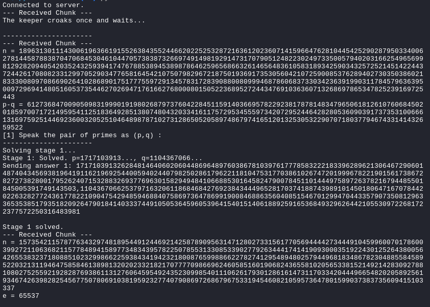
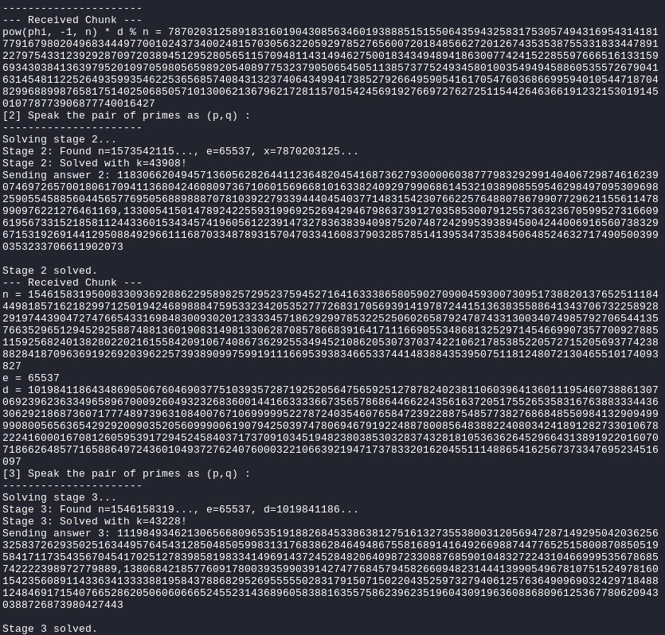
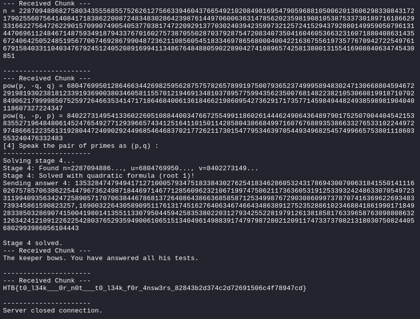
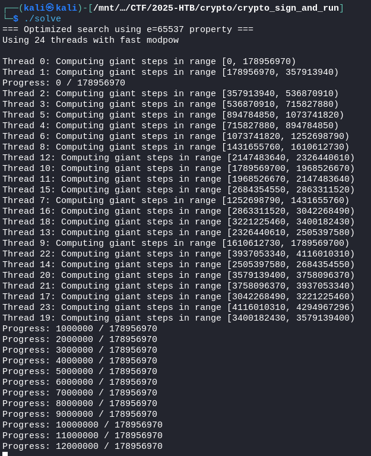

Crypto
CHALLENGE NAME
Leaking for Answers
Willem's path led him to a lone reed-keeper on the marsh bank. The keeper speaks only in riddles and will reveal nothing for free - yet he offers tests, one for each secret he guards. Each riddle is a vetting: answer each in turn, and the keeper will whisper what the fen keeps hidden. Fail, or linger too long answering the questions, and the marsh swallows the night. This is a sourceless riddle stand - connect, answer each of the keeper's four puzzles in sequence, and the final secret will be yours.



HTB{t0_l34k___0r_n0t___t0_l34k_f0r_4nsw3rs_82843b2d374c2d72691506c4f78947cd}
import socket
import re
import math
def solve_stage1(data):
# Regex updated to only match positive n
n_match = re.search(r"n = (\d+)", data)
pq_diff_match = re.search(r"p-q = (-?\d+)", data)
if not n_match or not pq_diff_match:
print("Error: Could not find n or p-q in stage 1 data.")
return None, None, None
n = int(n_match.group(1))
d = int(pq_diff_match.group(1))
try:
delta = d*d + 4*n
# Check if delta is a perfect square
s = math.isqrt(delta)
if s * s != delta:
print("Error: Delta is not a perfect square.")
return None, None, None
q = (-d + s) // 2
p = d + q
if p < q:
p, q = q, p
# Return the string format, p, and q
print(f"Stage 1: Solved. p={str(p)[:10]}..., q={str(q)[:10]}...")
return f"{p},{q}", p, q
except Exception as e:
print(f"Error during stage 1 calculation: {e}")
return None, None, None
def solve_stage2(data):
n_match = re.search(r"n = (\d+)", data)
e_match = re.search(r"e = (\d+)", data)
x_match = re.search(r"pow\(phi, -1, n\) \* d % n = (\d+)", data)
if not n_match or not e_match or not x_match:
print("Error: Could not parse n, e, or x from stage 2 data.")
return None
n = int(n_match.group(1))
e = int(e_match.group(1))
x = int(x_match.group(1))
print(f"Stage 2: Found n={str(n)[:10]}..., e={e}, x={str(x)[:10]}...")
# Try k from 1 to a large number
# Also try negative k values
for k in list(range(1, 300000)) + list(range(-1, -10000, -1)):
try:
term = (e * x - k) % n
# Skip if term is 0
if term == 0:
continue
# Check if term is invertible mod n
g = math.gcd(term, n)
if g > 1:
# We found a factor!
if 1 < g < n:
p = g
q = n // g
if p * q == n:
print(f"Stage 2: Found factor via gcd at k={k}!")
return f"{min(p,q)},{max(p,q)}"
continue
# Compute modular inverse
phi_c = pow(term, -1, n)
# Verify phi is reasonable
if phi_c <= 0 or phi_c >= n:
continue
# Calculate p + q
S = n - phi_c + 1
# Check if we can solve for p and q
delta = S * S - 4 * n
if delta < 0:
continue
sqrt_delta = math.isqrt(delta)
if sqrt_delta * sqrt_delta != delta:
continue
p = (S + sqrt_delta) // 2
q = (S - sqrt_delta) // 2
# Verify
if p * q == n and p > 1 and q > 1:
print(f"Stage 2: Solved with k={k}!")
return f"{min(p,q)},{max(p,q)}"
except:
continue
print("Error: Stage 2 solver failed.")
return None
def solve_stage3(data):
"""
Given n, e, and d, recover p and q.
We know: e * d ≡ 1 (mod phi)
So: e * d = 1 + k * phi
Therefore: phi = (e * d - 1) / k for some small k
"""
n_match = re.search(r"n = (\d+)", data)
e_match = re.search(r"e = (\d+)", data)
d_match = re.search(r"d = (\d+)", data)
if not n_match or not e_match or not d_match:
print("Error: Could not parse n, e, or d from stage 3 data.")
return None
n = int(n_match.group(1))
e = int(e_match.group(1))
d = int(d_match.group(1))
print(f"Stage 3: Found n={str(n)[:10]}..., e={e}, d={str(d)[:10]}...")
# e * d = 1 + k * phi
# So phi = (e * d - 1) / k
ed_minus_1 = e * d - 1
# k is typically very small (usually less than e)
for k in range(1, 100000):
if ed_minus_1 % k != 0:
continue
phi_c = ed_minus_1 // k
# phi must be less than n
if phi_c <= 0 or phi_c >= n:
continue
# Calculate S = p + q
# phi = (p-1)(q-1) = pq - p - q + 1 = n - (p+q) + 1
# So: p + q = n - phi + 1
S = n - phi_c + 1
# p and q are roots of: z^2 - S*z + n = 0
# Using quadratic formula: z = (S ± sqrt(S^2 - 4n)) / 2
delta = S * S - 4 * n
if delta < 0:
continue
sqrt_delta = math.isqrt(delta)
if sqrt_delta * sqrt_delta != delta:
continue
p = (S + sqrt_delta) // 2
q = (S - sqrt_delta) // 2
# Verify the solution
if p * q == n and p > 1 and q > 1:
# Additional verification: check that phi is correct
phi_actual = (p - 1) * (q - 1)
if phi_actual == phi_c:
# Final verification: e * d ≡ 1 (mod phi)
if (e * d) % phi_c == 1:
print(f"Stage 3: Solved with k={k}!")
return f"{min(p,q)},{max(p,q)}"
print("Error: Stage 3 solver failed after iterating k.")
return None
def solve_stage4(data):
"""
Solves stage 4 using a direct algebraic solution.
The relationship pu + qv = n + 1 leads to a
quadratic equation for p: (u)p^2 - (n + 1)p + (nv) = 0
"""
n_match = re.search(r"n = (\d+)", data)
p_inv_q_match = re.search(r"pow\(p, -q, q\) = (\d+)", data)
q_inv_p_match = re.search(r"pow\(q, -p, p\) = (\d+)", data)
if not n_match or not p_inv_q_match or not q_inv_p_match:
print("Error: Could not parse n, u, or v from stage 4 data.")
return None
n = int(n_match.group(1))
u = int(p_inv_q_match.group(1)) # p^(-1) mod q
v = int(q_inv_p_match.group(1)) # q^(-1) mod p
print(f"Stage 4: Found n={str(n)[:10]}..., u={str(u)[:10]}..., v={str(v)[:10]}...")
# Solve the quadratic equation: (u)p^2 - (n + 1)p + (nv) = 0
# a = u
# b = -(n + 1)
# c = n * v
a = u
b = -(n + 1)
c = n * v
try:
# Calculate the discriminant
delta = (b * b) - (4 * a * c)
if delta < 0:
print("Error: Stage 4 delta is negative.")
return None
# Check if delta is a perfect square
s = math.isqrt(delta)
if s * s != delta:
print("Error: Stage 4 delta is not a perfect square.")
return None
# Find the two possible roots for p
# p = [-b +/- s] / 2a
# Root 1: (-b + s) / 2a
if (-b + s) % (2 * a) == 0:
p_candidate = (-b + s) // (2 * a)
# Check if this p is a valid factor
if p_candidate > 0 and n % p_candidate == 0:
q_candidate = n // p_candidate
# Final verification:
if p_candidate * q_candidate == n and (p_candidate * u + q_candidate * v == n + 1):
print("Stage 4: Solved with quadratic formula (root 1)!")
return f"{min(p_candidate,q_candidate)},{max(p_candidate,q_candidate)}"
# Root 2: (-b - s) / 2a
if (-b - s) % (2 * a) == 0:
p_candidate = (-b - s) // (2 * a)
# Check if this p is a valid factor
if p_candidate > 0 and n % p_candidate == 0:
q_candidate = n // p_candidate
# Final verification:
if p_candidate * q_candidate == n and (p_candidate * u + q_candidate * v == n + 1):
print("Stage 4: Solved with quadratic formula (root 2)!")
return f"{min(p_candidate,q_candidate)},{max(p_candidate,q_candidate)}"
print("Error: Stage 4 roots were not valid factors.")
return None
except Exception as e:
print(f"Error during stage 4 quadratic solve: {e}")
return None
def main():
HOST = "209.38.193.112"
PORT = 31753
with socket.socket(socket.AF_INET, socket.SOCK_STREAM) as s:
s.connect((HOST, PORT))
print("Connected to server.")
stage1_solved = False
stage2_solved = False
stage3_solved = False
stage4_solved = False
# Buffer to store all data from the server
full_data_buffer = ""
while True:
try:
# Read a chunk and add it to the buffer
chunk = s.recv(4096).decode()
if not chunk:
print("Server closed connection.")
break
full_data_buffer += chunk
print(f"--- Received Chunk ---\n{chunk}\n----------------------")
# Check for stage 1 prompt
if "[1] Speak the pair of primes as (p,q) :" in full_data_buffer and not stage1_solved:
print("Solving stage 1...")
answer1, p1, q1 = solve_stage1(full_data_buffer)
if answer1:
send_data = f"{answer1}\n"
print(f"Sending answer 1: {send_data}")
s.sendall(send_data.encode())
stage1_solved = True
print("Stage 1 solved.")
full_data_buffer = ""
else:
print("Stage 1 solver failed. Exiting.")
break
# Check for stage 2 prompt
elif "[2] Speak the pair of primes as (p,q) :" in full_data_buffer and stage1_solved and not stage2_solved:
print("Solving stage 2...")
answer2 = solve_stage2(full_data_buffer)
if answer2:
send_data = f"{answer2}\n"
print(f"Sending answer 2: {send_data}")
s.sendall(send_data.encode())
stage2_solved = True
print("Stage 2 solved.")
full_data_buffer = ""
else:
print("Stage 2 solver failed. Exiting.")
break
# Check for stage 3 prompt
elif "[3] Speak the pair of primes as (p,q) :" in full_data_buffer and stage2_solved and not stage3_solved:
print("Solving stage 3...")
answer3 = solve_stage3(full_data_buffer)
if answer3:
send_data = f"{answer3}\n"
print(f"Sending answer 3: {send_data}")
s.sendall(send_data.encode())
stage3_solved = True
print("Stage 3 solved.")
full_data_buffer = ""
else:
print("Stage 3 solver failed. Exiting.")
break
# In main(), add after stage3:
elif "[4] Speak the pair of primes as (p,q) :" in full_data_buffer and stage3_solved and not stage4_solved:
print("Solving stage 4...")
answer4 = solve_stage4(full_data_buffer)
if answer4:
send_data = f"{answer4}\n"
print(f"Sending answer 4: {send_data}")
s.sendall(send_data.encode())
stage4_solved = True
print("Stage 4 solved.")
full_data_buffer = ""
else:
print("Stage 4 solver failed. Exiting.")
break
# Check for flag
elif "flag" in full_data_buffer.lower() or "ctf{" in full_data_buffer.lower():
print(f"FLAG DETECTED:\n{full_data_buffer}")
break
except socket.timeout:
print("Socket timed out.")
break
except Exception as e:
print(f"An error occurred: {e}")
break
if __name__ == "__main__":
main()
CHALLENGE NAME
Leaking for Answers
Willem's path led him to a lone reed-keeper on the marsh bank. The keeper speaks only in riddles and will reveal nothing for free - yet he offers tests, one for each secret he guards. Each riddle is a vetting: answer each in turn, and the keeper will whisper what the fen keeps hidden. Fail, or linger too long answering the questions, and the marsh swallows the night. This is a sourceless riddle stand - connect, answer each of the keeper's four puzzles in sequence, and the final secret will be yours.
gcc -O3 -o solve solve.c -lgmp -lpthread -lz
📃solve.c6.7KB

I was only moments away from this, was the correct way to get it.
{kind=link}
{kind=link}
{kind=link}
{kind=link}